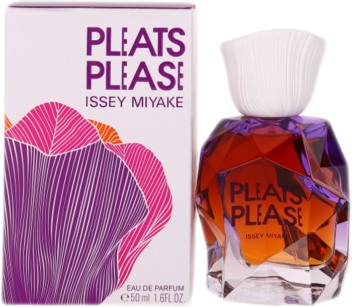

Issey Miyake's help with Ne-Net
In 1996, Kazuaki Takashima, the founder of Ne-Net, was hired at Issey Miyake. In 2002, his postition in the company was promoted up to director for the "PLEATS PLEASE ISSEY MIYAKE" collection at Issey Miyake. When Takashima left Issey Miyake, the brand helped him with his endeavor with Ne-Net. The conglomerate A-net Inc., which is closely tied with Issey Miyake, produced Ne-Net's products.

The Issey Miyake Brand
Issey Miyake is a very expensive fashion brand. It's luxury products are extremely expensive when compared to Ne-Net's. Issey Miyake's designs focus on the movement and room between fabric and skin, creating uniquely fitting pieces
Issey Miyake Official WebsiteIssey Miyake Sub-Brands
- Pleats Please Issey Miyake
- Homme Plissé Issey Miyake
- A-POC ABLE Issey Miyake
- BAO BAO Issey Miyake
- 132 5. Issey Miyake